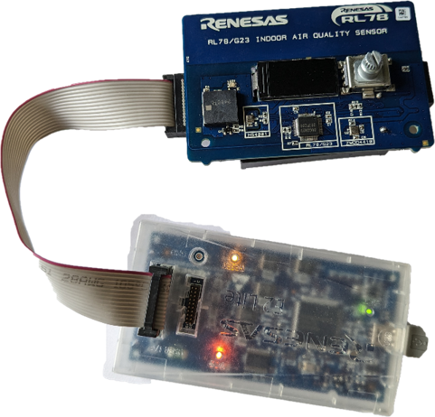
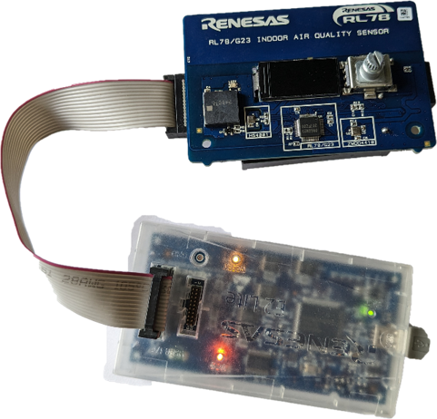

Here we will guide you through debugging this labs project and will provide details on how to verify the working of the project.
4.1 Build the project - TODO images
To build the project please [Right-Click] the project and click Build Project.
4.2 Hardware - TODO show current measurement connections
Before debugging the project, please ensure headers are fitted to the header H1 in positions 1-2
(VBATT-VDD) & 4-5 (VDD_RL78 - VDD).
Finally connect the E2-Lite - the user does need to connect batteries for this lab as we will not be keeping the debugger.
 

4.3 Flashing the image - TODO RFP
4.4 Operating project - TODO